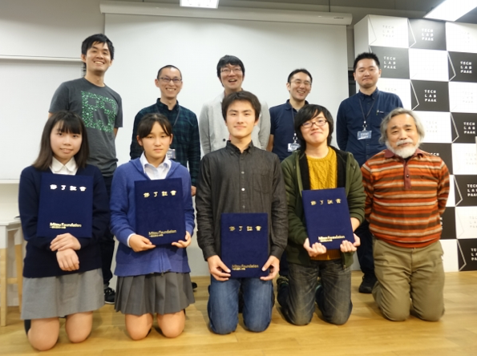

2016年度は、16件の応募中、4プロジェクト6人を採択しました。
2017年度の成果はこちら
福住 仁志朗 (鈴木PM)
Voice Commanderは、声とジェスチャーで操作する新感覚チェスゲームです。 グラフィックにこだわるだけでなく、音声認識によるコマの操作、スマホに表示したマーカーを利用したジェスチャー操作等を組み合わせることで、「かっこよさ」を追求しています。 アニメ「ノーゲーム・ノーライフ」に出てきたチェスから着想を得て開発をすすめました。 それぞれのマスにはプレーヤーが音声認識の際に叫ぶための名前がついていて、テキストファイルを変更することで簡単に名前をカスタマイズすることもできます。
声による命令とジェスチャーで、プレイヤーを本物の司令官にしてしまう新感覚のコンピュータチェスを実現しました。 福住さんはプロジェクト当初から「かっこいいチェスを作る」という目標に一貫してこだわり、画像処理や音声認識、3D グラフィックスなど、目標達成に必要な技術を一つ一つ学習し、自分のものにしていきました。 チェスという伝統的な遊びを踏襲しながらも、まったく新しいプレイ体験を構築したのは、未踏的な発想力と実装力もさることながら、プロジェクト期間中に PM 陣や協力者から受けた様々な意見や提案にただ流されるのでなく、自分なりに吟味・取捨選択し、適切に開発方針を見定めていった成果だと思います。
福田 恭子 工藤 零大 (西尾PM)
スマートペンは、「勉強する時間を計測してさぼり癖をなくしたい」という思いから開発された、スマートデバイスです。 ペンのグリップ部分に取り付けられた静電容量式タッチセンサを利用することでペンを握っているかを検知し、自動で勉強時間を計測、記録します。 記録した勉強時間のログは、スマートフォンに対応アプリケーションをインストールすることで簡単に見ることができます。
「明示的な記録開始動作なしに勉強時間を計測したい」という目的のために、ペンにセンサを内蔵しBLEで通信することを提案したプロジェクトでした。共有の作業場なしで物理的なデバイスを製作する困難の中、短い開発期間でペンとして実用可能なサイズのプロトタイプを完成させました。素晴らしい成果だと思います。今後は商品化という更に高い目標を目指すそうで、きっと多くの学びと成長があることだろうと期待しています。
木村 皓子 (鵜飼PM)
VR絵本メーカーは、 VRで体験できる世界やストーリーを制作するためのスマートフォンアプリケーションです。 物語の世界に入ることができる！大好きなあの人とデートができる！憧れのアーティストのライブにも行けちゃう！誰でも簡単にスマホで観れるVR絵本をつくれます。 ユーザーは背景となる360度画像を選択し、キャラクターや吹き出し、さらに効果音、遷移エフェクトを選択してVR絵本にします。
ユーザーががVRコンテンツを作れるアプリを作る、という非常に挑戦的なテーマに挑み、実際に自分が体験したかった「銀河鉄道」の様なVRコンテンツが製作できるものに仕上げたのは大変素晴らしいです。 今後はアプリのリリースに向けて、細かいバグ修正やコンテンツの共有機能を実装し、さらにその世界を広げていくことを強く期待します。